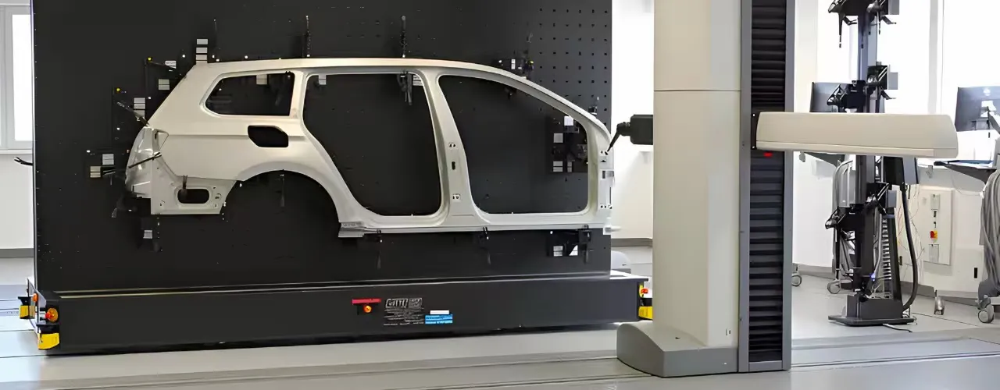

About the Client
A global automotive OEM manufacturing vehicles with diverse styles and complex geometries. The client required a precise and coordinated approach to ensure dimensional accuracy and structural integrity across Body-in-White (BIW) assembly operations.
The Challenge
Managing BIW components across multiple models and variants demands accurate CAD, coordinated weld planning, and robust quality control. The client faced challenges due to:
- Complex data files and variant configurations
- High volume of CAD parts requiring fitment validation
- Coordination of digital math data with weld planning workflows
- Lack of streamlined systems for ensuring consistent model updates across global teams
The Solution
We delivered an integrated digital process to manage BIW design-to-build accuracy, from CAD coordination to measurement strategy planning.
Key solution components included:
- Centralized coordination of CAD math data across all BIW components
- Fit-and-finish validation ensuring proper clamping, alignment, and weld sequencing
- Support for weld process planning directly linked to math models
- Development of Measurement Point Strategy to ensure accuracy across build stages
- Real-time validation of model and variant updates to minimize errors and rework
The Impact
The solution ensured consistent product quality and manufacturing efficiency across BIW operations:
Reduced dimensional variation across styles and variants
Improved weld process consistency through data-driven planning
Enhanced final appearance and craftsmanship via validated fit-and-finish
Streamlined data handling and file management for complex CAD assemblies
Higher first-time-right build quality, minimizing in-process distortion